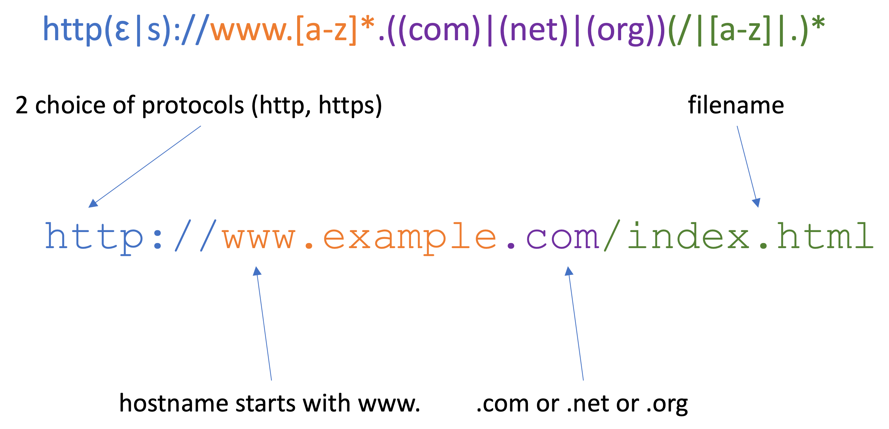

Regular Grammars and Regular Expressions
Before moving onto parsing, we take one detour through as class of grammars that is weaker than context-free grammars (the grammars described by BNF specifications) but surprisingly useful.
Definition. A (right linear) regular grammar is one given by a BNF specification with the only the following kinds of rules.
<non-term> ::= term<non-term> ::= term | <other-non-term>where<other-non-term>may be the same as<non-term><non-term> ::= EMPTYwhereEMPTYis a special symbol representing the empty sequence.
It is not difficult to imagine what a left linear regular grammar would be, but we won't be too concerned with this. Here is a simple example of a regular grammar.
<s> ::= a<s>
<s> ::= b<a>
<a> ::= EMPTY
<a> ::= c<a>
One key feature of regular grammars is that their derivations are very nicely structured.
At each step, there is always a single non-terminal symbol in the rightmost position which is either shifted over by a terminal symbol or dropped (i.e., replaced with EMPTY).
<s>
a<s>
aa<s>
aaa<s>
aaab<a>
aaabc<a>
aaabcc<a>
aaabccc<a>
aaabcccc<a>
aaabcccc
Exercise. Give a derivation of
abccin the above grammar. Isba sentence of the above grammar?
Another key feature is that they have a very compact representation, which can be seen to parallel the extensions to BNF we gave in the previous section.
Definition. A regular expression is defined as follows.
- A terminal symbol is a regular expression.
- If
eandfare regular expressions, then so are
(e|f)(alternative)(ef)(sequence)e*(zero-or-more repetition, a.k.a., the Kleene star)A regular expression
erecognizes sentences according to the following rules.
- A terminal symbol
termrecognizes the the sentenceterm.- if
erecognizess, thene|frecognizess.- if
frecognizess, thene|frecognizess.- if
erecognizessandfrecognizest, then(ef)recognizesste*recognizesEMPTY- if
erecognizess_1,s_2,...,s_kthene*recognizess_1s_2...s_k
We're not going to talk about the translation between these two representations, but it is a theorem of formal language theory that every regular grammar can be represented regular expression and vice versa. This is to say, given a regular grammar, we can find a regular expression which recognizes the same sentences (and vice versa).
Example. We might notice that the above grammar has the property that it recognizes any sentence which is made up of any number of
as followed by a singlebfollowed by any number ofcs. This is represented by the regular expression(a*bc*). We will often drop outer parentheses, so that we could also write the regular expressiona*bc*.
Example. The regular expression
a((bc)|(cb))*drecognizes the sentenceabccbd. This sentence contains a singlea, followed by to repetitions of eitherbcorcb(the firstbc, the secondcb), followed by a singled.
A More Interesting Example: URLs
